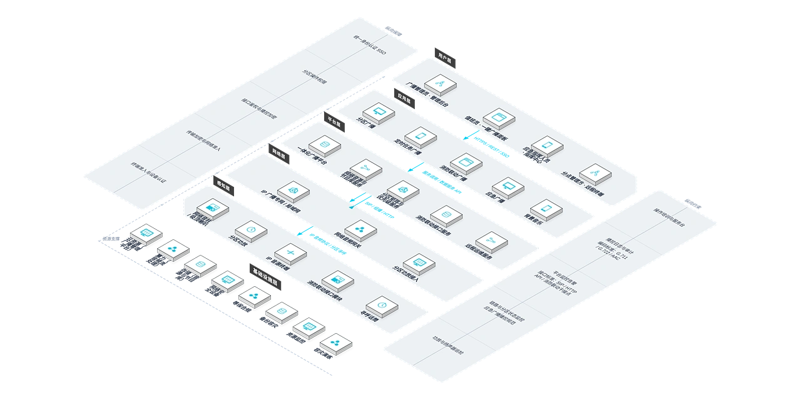

为公共建筑提供基于 IP 网络的高品质广播及背景音乐解决方案，解决传统模拟广播分区控制弱、音质衰减、与消防系统脱节的问题，实现日常广播、背景音乐与消防应急疏散的一体化管控。
业务痛点
多套系统重复建设
背景音乐、业务广播、消防广播各自独立，设备冗余、成本高昂。
模拟传输音质衰减
传统模拟广播长距离传输后音质下降，音量不均衡。
分区控制粗放
无法实现按楼层、按区域的独立音量与内容控制。
业务影响
应急响应存在风险
火灾发生时需人工切换广播模式，延误疏散时机，构成安全隐患。
应急延误构成安全隐患
火灾等紧急场景下人工切换广播模式会错过最佳疏散时机，日常运营与应急安全同时面临风险。
业务需求
一体化广播平台
需要一套系统同时承载日常广播、背景音乐与应急疏散。
消防深度联动
需要火灾信号触发时自动切换疏散广播，无需人工干预。
核心能力
网络音源管理
音频服务器统一管理节目源，支持远程播控。
256 分区精细控制
按楼层、区域独立控制音量与内容，互不干扰。
消防联动切换
火灾信号自动触发疏散广播，抢占最高优先级。
定时任务与一键广播
上下课铃声、定时节目自动执行，突发事件一键全呼。
远程管理
PC 端与手机端远程控制，随时随地管理广播。
方案架构

优势与交付
我们以 IP 网络广播平台与消防联动能力，为公共建筑提供一套系统替代多套系统的建设方式，并通过勘察设计、布线安装、调试培训与质保运维保障落地。
差异化优势
一套系统三种用途
同时满足背景音乐、业务广播和紧急疏散需求，一套系统替代多套独立系统，建设成本降低。
256 个独立分区
不同区域播放不同内容，控制精细到楼层，满足复杂建筑的分区管理需求。
消防自动联动
火灾时自动切换疏散广播，无需人工干预，保障人员生命安全。
远程移动管理
PC 与手机端远程控制播控，运维便捷，管理人员随时随地掌控广播状态。
IP 网络传输
依托现有 IP 网络传输，布线简洁，扩展灵活，新区域接入成本低。
高保真音质
数字音频处理，音质清晰无衰减，背景音乐体验舒适，广播指令传达准确。
实施流程
需求调研
梳理建筑分区、广播用途与消防联动要求。
方案设计
输出分区方案、点位设计与设备清单。
网络布线
依托 IP 网络或专用线路完成传输链路铺设。
设备安装
扬声器、音源与控制设备安装到位。
系统调试
分区、定时任务与消防联动联调测试。
培训交付
培训广播管理员与消防值班人员后交付运行。
服务保障
客户价值
一套系统替代多套独立系统，建设成本与维护成本均有效降低；数字化管理提升运营效率；消防联动保障人员生命安全。